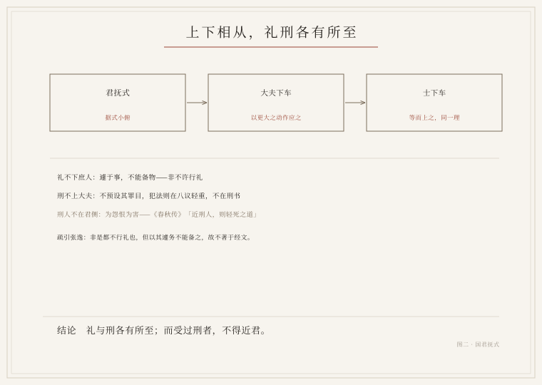

曲礼上 · 一·一百零五 · 第 103 课
国君凭式俯首，大夫就下车；大夫凭式俯首，士就下车。又两句大话：礼不下庶人，刑不上大夫；刑人不在君侧。
说什么事：国君抚式，大夫下之；大夫抚式，士下之。礼不下庶人，刑不上大夫。刑人不在君侧。
落在哪一层：分，兼及礼意。前两句言等，后三句言界。
为何编在此位：上节言容，此节言等与界。曲礼上至此已将尽，此为收束之论。
【经】國君撫式，大夫下之。大夫撫式，士下之。禮不下庶人，刑不上大夫。刑人不在君側。
【注】撫猶據也。據式小俛，崇敬也。乘車必正立。禮不下庶人，為其遽於事，且不能備物。刑不上大夫，不與賢者犯法，其犯法則在八議輕重，不在刑書。刑人不在君側，為怨恨為害也。《春秋傳》曰：「近刑人，則輕死之道。」
抚式 注「抚犹据也。据式小俛，崇敬也」。手按车式，微俯其身。
下之 下车。疏「君式宗庙，则臣宜下车……此独云大夫，则士可知也」。
礼不下庶人 注「为其遽于事，且不能备物」。疏引《白虎通》「礼为有知制，刑为无知设」；张逸「非是都不行礼也，但以其遽务不能备之」。
刑不上大夫 注「不与贤者犯法，其犯法则在八议轻重，不在刑书」。疏「不设大夫犯罪之目」。
刑人不在君侧 注「为怨恨为害也」；引《春秋传》「近刑人，则轻死之道」。
八议 《周礼·秋官·小司寇》：议亲、议故、议贤、议能、议功、议贵、议勤、议宾。
国君凭式俯首，大夫就下车；大夫凭式俯首，士就下车。礼不施于庶人，刑不加于大夫。受过刑的人不在国君身边。
一节五句，前二句讲「上敬则下从」，后三句讲两条界限。礼与刑各有所至：礼到士而止，刑到庶人而止；而受过刑者，无论如何不得近君。三句合看，是一套关于「谁受什么对待」的秩序。
第一层 式与下 君式则臣下，大夫式则士下。敬自上发，从者以更大的动作应之。
第二层 礼不下庶人 注说得很实：庶人忙于生计，且不能备物。礼之繁，需物与暇。张逸说「非是都不行礼也」，此语最平。
第三层 刑不上大夫 注「不与贤者犯法」。不是大夫可免罪，是「不预设其罪目」，犯法则以八议议其轻重。
第四层 刑人不在君侧 注「为怨恨为害」。受过刑者心怀怨，近君则危。此句最冷，也最实。
与今日何干 礼制之等已不存，但其理仍在：制度要考虑人的处境与能力，惩戒要考虑其位置与影响。
| 左 | 右 |
|---|---|
| 国君抚式 | 据式小俯，崇敬 |
| 大夫下之 | 君式则臣下车 |
| 大夫抚式，士下之 | 等而上之，同一理 |
| 礼不下庶人 | 遽于事，不能备物 |
| 刑不上大夫 | 不预设其罪目，犯法则八议 |
| 刑人不在君侧 | 防其怨恨为害 |
画车与阶两处：左为一辆车，车箱前横木（式）上有手按之痕、车旁地面有一双下车后的脚印；右为一段台阶，阶上位置空缺、阶下并立两处脚印。两处之间以一道细线分界。不画人、不写文字。赭色只在车式的横木。
